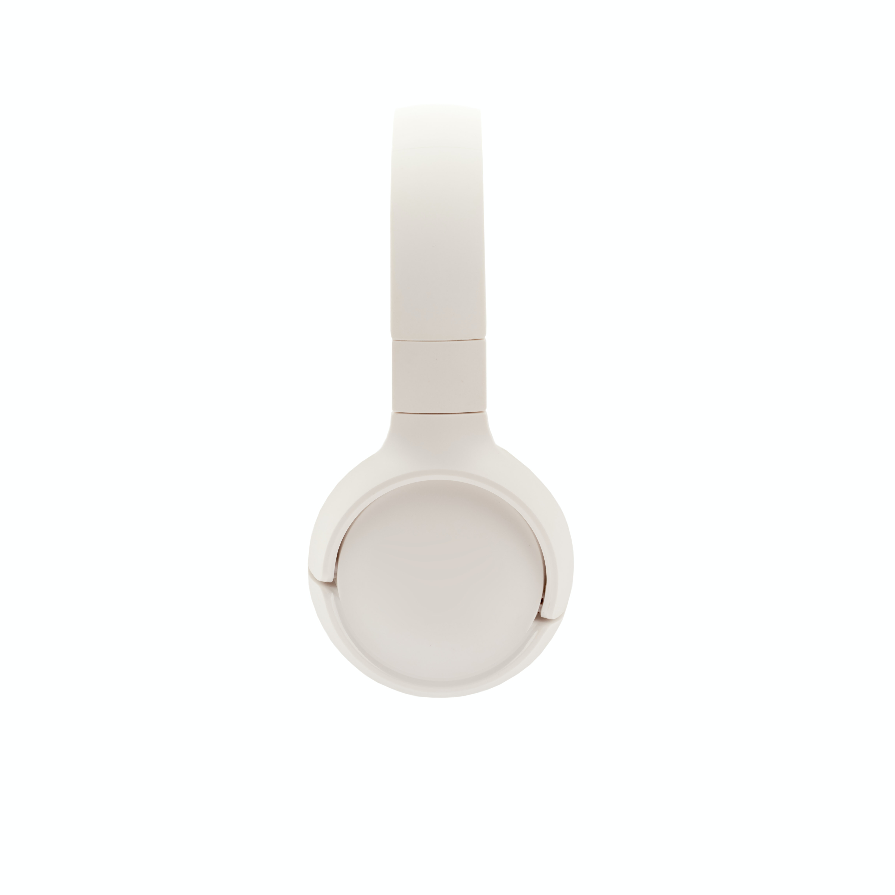

JUST LAUNCHED:
Skulltop Mini
From Heavy Bass to Crispy High End, listen every detail.

Deep Bass
Rich and super deep bass gives you the best experience, be prepared to let your mind be blown away in space
Rich Mids
To truly enjoy the vocals of your favourite singers and rappers, we have designed the driver that outputs the best mids in the game
Crispy Highs
From Jazz to Rock to Metal, the high end of this headphone delivers the cleanest highs so you can enjoy every detail